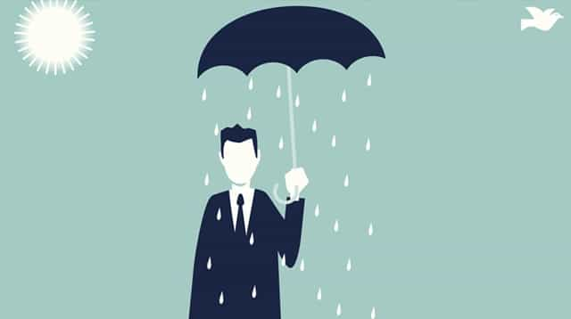

Corey is an iconoclast and the author of 'Man's Fight for Existence'. He believes that the key to life is for men to honour their primal nature. Visit his new website at primalexistence.com


We, modern men, need to constantly improve ourselves in a hostile world like ours that tries to debase us. While the lesser “men” embrace weakness and degeneracy, we must embrace strength and discipline. While whiners complain about how unfair the world is and how it’s better to just disengage, we must engage the world with greater willpower and defeat our enemies. Towards this end, I propose that we become both resilient and antifragile in every way possible.
The following are ways you can turn a seemingly negative circumstances into strengths.
Although stress has been maligned as the plague of the modern world that wrecks our mental and physical health, the way you perceive it makes a profound difference on how it affects you. New studies have shown that those who see stress as being toxic suffered damaging health effects while who saw it as being helpful were able to turn it into a source of energy to push them through their challenges.
So, next time you feel stressed from whatever trouble you may be facing, remember that it is your friend. You must reframe the sensation and believe that it’s your body trying to help you. By changing how you processes stress, you can use it to succeed in life.
Your response to obstacles reveal the kind of man you really are.
Whatever obstacles you may face in your endeavors, you have two choices: become frustrated and discouraged by it, or see it as an opportunity to grow stronger. Like stress, it’s the weaker man’s inclination to view an obstacle as a confirmation of his own helplessness, but you must do better and face up to whatever gets in your way. Use every occasion to grow stronger from your obstacles and if you aren’t facing enough of them in your life, you need to get out and start doing more things.
How you deal with obstacle will show your true nature as a man for the world to see. So, don’t pussy out or moan about what you must overcome; instead, be determined to rise above it. Your honor is at stake.

Failures are inevitable in life. Although you should always try your best to succeed, you shouldn’t be afraid to fail either. Just as with obstacles, view every instance of failure as an opportunity to learn and adapt. It’s not failure itself that is bad, but not learning from it or giving up so easily. Remember: winners don’t quit; they try to do better.

Rejection is a specific kind of failure that is often the most painful of them all. It’s especially difficult because it’s often unclear whether it was actually your fault or not. I would say that it’s best to assume full responsibility for all the rejections you face and see what area you can improve to better increase your chance next time. As long as you’re willing to learn and as long as you’re willing to try again, you will grow. Master rejections and you’ll be placing yourself far above other men.
This is why Russians are so tough.
It’s well known that the human body is designed to be anti-fragile. Your bones get thicker with every blow and your skin gets tougher with every scrap. Pain and discomfort of all sorts also become more bearable the more you expose yourself to them. The more harshness you endure, the stronger you become over time. But inversely, the more comfortable you are, the softer you turn and the weaker you get.
One simple method you can implement to become more healthy and energized is to start taking cold showers. The benefits of doing it are many, including: stronger immune system, enhanced mood and energy, better circulation, boost in testosterone level, and so on. If you are having trouble getting started, start by doing just 30 seconds at the end of your usual warm shower and go from there. You want to train yourself until you can comfortably stand under the coldest water for at least five minutes.

You can’t really turn fear itself into a positive, but the process of conquering your fears can have a transformative effect on your life. Some of the proudest, most exciting, and memorable moments of my life were when I defied fears by doing a presentation in front of hundreds of people (I had a terrible stage-fright), going rock climbing (I have a terrible fear of heights), and traveling for the first time by myself to a foreign country.
One thing you can do to completely turn your life around is to do what this man did and make a list of all the fears that you wish to defeat. Write them down in an order from the least fearful to the most and start knocking them down one by one. It’s impossible not to become a better man once you conquer them all.

Like fear, anger is not something you can transform into a positive trait (I’ve heard of people “transmutating” their anger to re-channel the energy into other activities, but I’ve never had it work that way). However, it is a good focal point to master your mind to become more stoic. It can also serve as your area of focus if you practice meditation.
No matter how unpleasant, your anger will teach you a lot about yourself and only if you allow it. It will reveal your weaknesses, insecurities, and any other areas of your life in need of improvement. As one of the most base and primal of human emotions, you shouldn’t just shirk it as something that is unneeded; instead, make it your friend.

For the longest time, I felt guilty about being “so negative” because I was constantly told by everyone else that it was a bad thing. Smile, they said; think positively, they said; your life will improve, they said. I was constantly berated for not being part of the North American positivity cult. It’s no wonder why people there tend to say that they’re doing “great” even when they’re feeling like shit (a habit I have yet to fix).
But in contrary to the long held belief that positive thinking and attitude gives you a better life, studies have shown just the opposite: Forced positivity can actually harm you. For some people (like me) positive thinking backfires and makes things worse. Also, bad-tempered people who are pessimists have been shown to enjoy more successful marriages, be healthier, live longer, be better at negotiating, and more successful overall in life. So, if you’re a natural grouch like me, it’s time to embrace who you are and tell the fake-ass, positivity people to shove it.
The road to self-improvement is an ugly and a bumpy one. I honestly can’t say that I enjoy it. But no matter what, I know that it is a necessary part of being a man. I can’t imagine myself not trying to be better in spite of all the difficulties. I refuse to live a life of complacency. Some people mock and insult our efforts, but know that their opinions don’t matter. Lesser men have no say on what it means to live. So, fight on and prosper, for this is your one and only life.
Read More: 8 Ways To Turn Your Insecurities Around